GitHub API Documentation Excel Tableau
Support

The Trading Economics Google Sheets Add-On provides direct access to 300.000 economic indicators, exchange rates, stock market indexes, government bond yields and commodity prices. It allows you to download millions of rows of historical data, to query our real-time economic calendar and to subscribe to updates.
You can get out Sheets Add-On here: Download TE Add-On.
Download it from the Google Web Store and follow these docs to learn how to use it.
After installed, to start using the Add-On click on tab Add-Ons - Trading Economics - Show Sidebar. The Add-On will pop up.
There are six main methods in which you can get data from TE API, these beeing Indicators, Calendar, Forecast, Markets, Earnings and News.
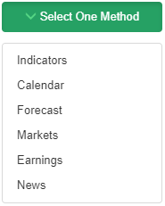Indicators has the sub-categories All Indicators, Historical Data, Credit Rating and Updates.
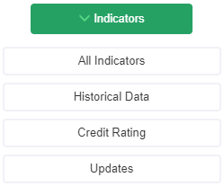In All Indicators you can:
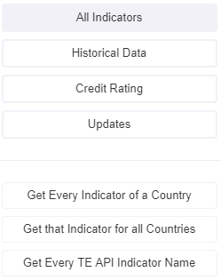In Historical Data you can:
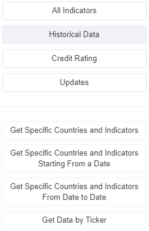In Credit Rating you can:
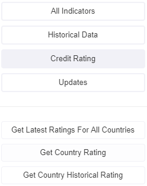In Updates you can:
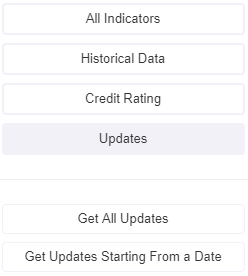In Calendar you can:
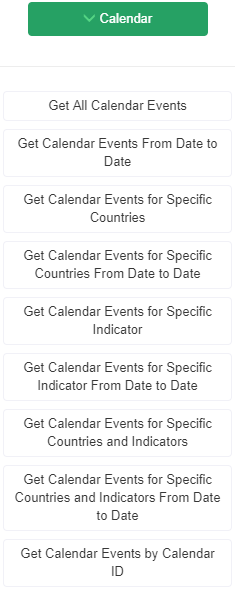In Forecast you can:
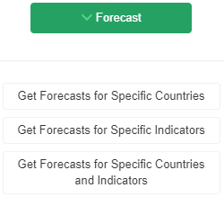Markets has the sub-categories Spanshots, Historical Data, Intraday Data and Market Lists.

In Spanshots you can:
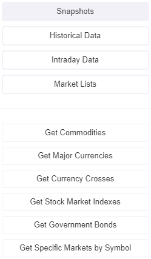In Historical Data you can:
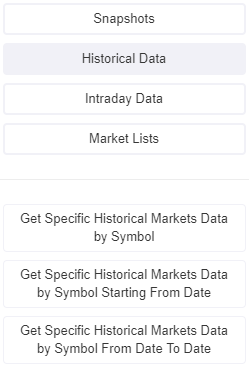In Intraday Data you can:
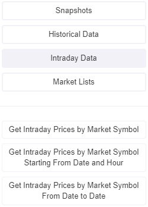In Market Lists you can:
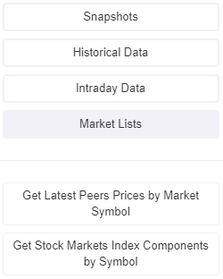In Earnings you can:
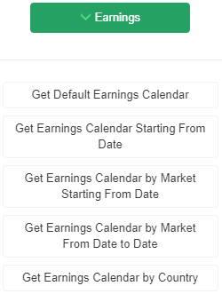News has the sub-categories Latest News and Latest Articles.

In Latest News you can:
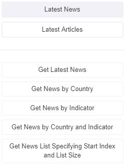In Latest Articles you can:
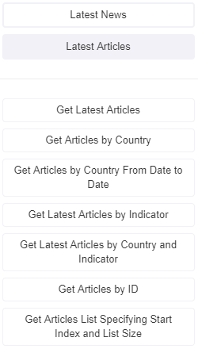
After choosing a way of getting data, depending on the option, many different input fields are displayed. These can be Countries, Indicators, Date, Symbols and many others.
Please pick only one indicator/country/symbol if the Add-On fails to display multiple ones.
Before submitting your data request insert your API Key.
Please subscribe to one of our plans if you do not have one.
After all is set click on the Submit button.
Your data will be displayed in Google Sheets.